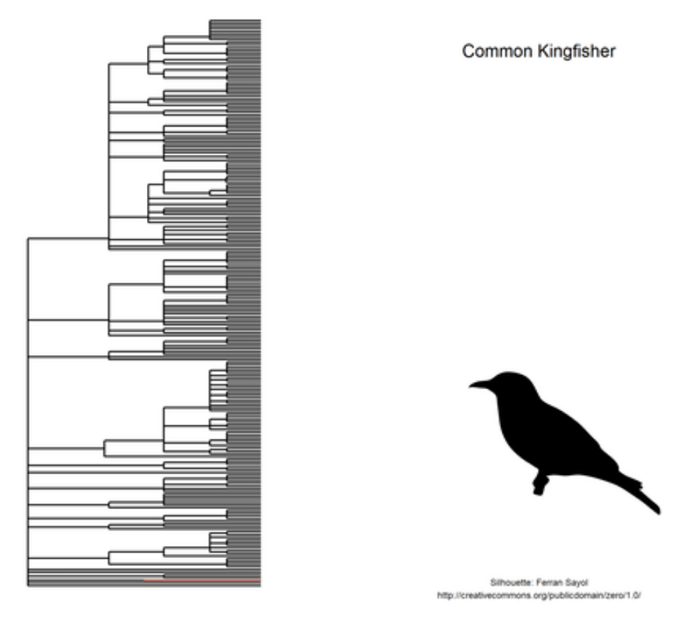
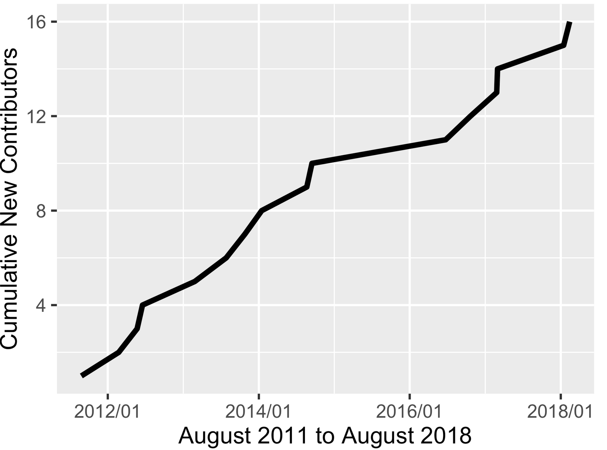
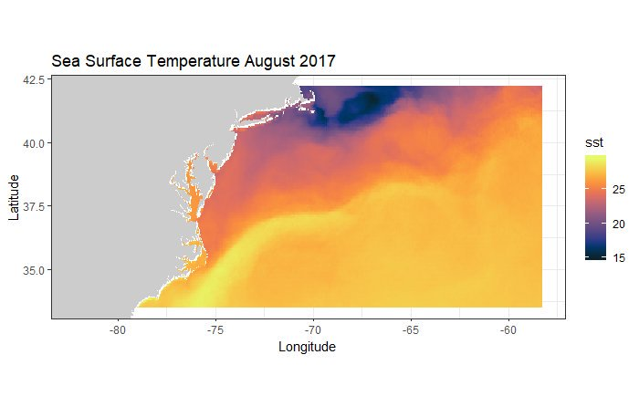
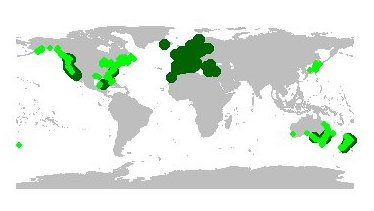
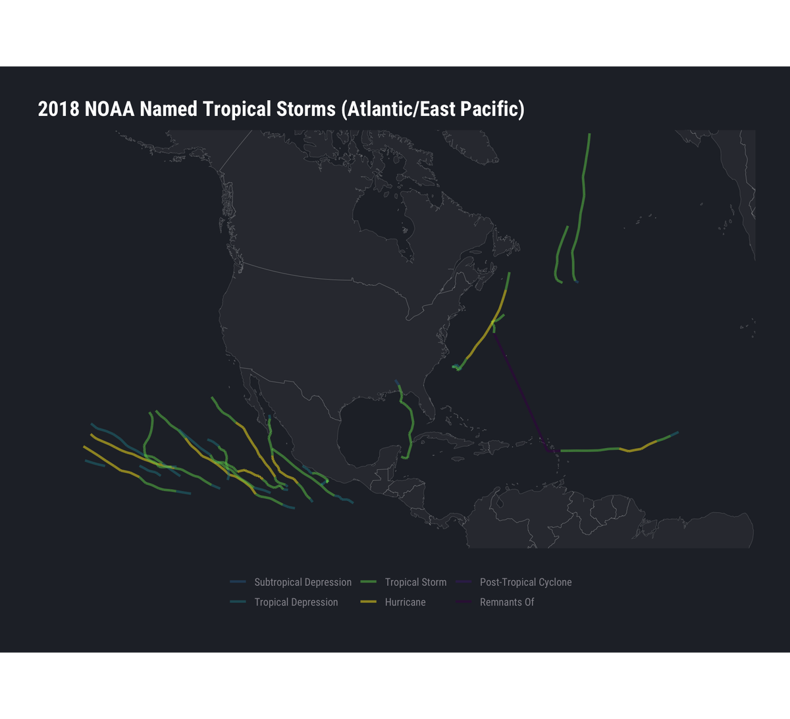

Sep 17, 2018
rOpenSci HQ
- OzUnconf https://ozunconf18.ropensci.org/ is running for the third year. The unconference is 22-23 November in Melbourne, Australia. OzUnconf is based on our main unconference in the US (http://unconf18.ropensci.org/) but more accessible to folks in Australia/Asia.
- The rOpenSci team at upcoming events:
- Sep 24-25, New York, NY, Karthik Ram, NumFOCUS Project Forum 2018
- A call to anyone making R packages - especially rOpenSci contributors. Help us build capacity of open source software users and developers with Hacktoberfest. Create an issue label in your repository named
hacktoberfest, like these https://github.com/search?q=user%3Aropensci+label%3Ahacktoberfest. The label will help potential contributors find your issues! - One of our community members David Winter is a finalist in the science category of the New Zealand Open Source Awards https://nzosa.org.nz/finalists2018/, in part due to his software contributions (rentrez, rotl) and involvement in rOpenSci software reviews.
Software 📦
CRAN:  GitHub:
GitHub: 
New versions
- A new version (
v0.2.1) ofbikedatais on CRAN - extract data from public hire bicycle systems. See the NEWS for changes. Checkout the bikedata docs to get started.

new fxn
bike_cities() - A new version (
v0.2.0) ofcRegulomeis on CRAN - access, manage and visualize regulome (microRNA/transcription factors)-gene correlations in cancer. See the NEWS for changes. Checkout the cRegulome vignettes to get started. - A new version (
v0.2.5) ofgetCRUCLdatais on CRAN - use and explore CRU CL v. 2.0 climatology elements. See the release notes for changes. Checkout the getCRUCLdata docs to get started.
remove startup message, reorg internal fxns
- A new version (
v0.4.0) ofbomrangis on CRAN - Australian government Bureau of Meteorology (BOM) data. See the NEWS for changes. Checkout the bomrang docs to get started.
bug fixes; many small changes
- A new version (
v0.0.3) ofarkdbis on CRAN - archive and unarchive databases as flat text files. See the NEWS for changes. Checkout the arkdb docs to get started.
remove dependency on
utils::askYesNo - A new version (
v1.4.0) ofijtiffis on CRAN - TIFF file I/O which plays nice with ImageJ. See the release notes for changes. Checkout the ijtiff docs to get started.
better docs; better error messages
- A new version (
v0.1.9) offingertipsRis on CRAN - Public Health England’s Fingertips data tool. See the NEWS for changes. Checkout the fingertipsR vignettes to get started.
new fields in
fingertips_data() - A new version (
v1.1.1) ofhydroscoperis on CRAN - Greek National Data Bank for Hydrometeorological Information. See the release notes for changes. Checkout the hydroscoper docs to get started. - A new version (
v1.0.2) ofessurveyis on CRAN - data from the European Social Survey. See the release notes for changes. Checkout the essurvey docs to get started. - A new version (
v0.15.3) ofDataPackageRis on CRAN - construct reproducible analytic data sets as R packages. See the NEWS for changes. Checkout the DataPackageR vignettes to get started. - A new version (
v0.3.5) oftidyhydatis on CRAN - Water Survey of Canada hydrometric data. See the release notes for changes. Checkout the tidyhydat vignettes to get started.
two new fxns; some output column names changed case; bug fixes
Software Review ✔
We accept community contributed packages via our onboarding system - an open software review system, sorta like scholarly paper review, but way better. We’ll highlight newly onboarded packages here. A huge thanks to our reviewers, who do a lot of work reviewing (see the blog post on our review system), and the authors of the packages!
If you want to be a reviewer fill out this short form, and we’ll ping you when there’s a submission that fits in your area of expertise.
The following package recently went through our onboarding process and has been approved!
- outcomerate > AAPOR Survey Outcome Rates
- Author: Rafael Pilliard Hellwig
- Issue: ropensci/onboarding#213
- Reviewers:
The following package was recently submitted:
- MODISTools > Interface to the MODIS Land Products Subsets Web Services
- Author: Koen Hufkens
- Issue: ropensci/onboarding#246
- Reviewers: not assigned yet
On the blog
Animal Movement series
We’re doing a series of posts corresponding to the material for a talk Maëlle gave at the Animal Movement Analysis summer school in Radolfzell, Germany on September 12th, at the Max Planck Institute of Ornithology. All five posts are out now:
- Where to go observe birds in Radolfzell? An answer with R and open data
- What birds are observed near Radolfzell? Bird occurrence data in R
- What’s this bird? Classify old natural history drawings with R
- What are these birds? Complement occurrence data with taxonomy and traits information
- What have these birds been studied for? Querying science outputs with R

Technotes
Scott Chamberlain wrote about one of our oldest packages: rgbif: seven years of GBIF in R

Maëlle Salmon had two technotes in the past month:
- In praise of Commonmark: wrangle (R)Markdown files without regex
- All the Badges One Can Earn: Parsing Badges of CRAN Packages READMEs

Use cases
The following 19 works use/cite rOpenSci software:
- Sánchez-Hernández and Amundsen used rfishbase in their paper Ecosystem type shapes trophic position and omnivory in fishes 1
- Bharanidharan et al. cited plotly in their paper Ruminal methane emissions, metabolic, and microbial profile of Holstein steers fed forage and concentrate, separately or as a total mixed ration 2
- Martín-Martín et al. used cld2 in their preprint Google Scholar, Web of Science, and Scopus: a systematic comparison of citations in 252 subject categories 3
- Grenié et al. used taxize in their paper Functional rarity of coral reef fishes at the global scale: Hotspots and challenges for conservation 4
- Magoga et al. used rentrez in their paper Barcoding of Chrysomelidae of Euro-Mediterranean area: efficiency and problematic species 5
- Catalano used textreuse in their paper Digitally Analyzing the Uneven Ground: Language Borrowing Among Indian Treaties 6
- Rakitko used rsnps in their paper COITR— novel algorithm for predicting child’s externally visible traits 7
- Cano et al. used opencage in their paper Modelling the spatial distribution of aquatic insects (Order Hemiptera) potentially involved in the transmission of Mycobacterium ulcerans in Africa 8
- Otten et al. used rentrez in their paper Systematic pharmacological screens uncover novel pathways involved in cerebral cavernous malformations 9
- Liu et al. used hunspell in their paper Asymmetric or Incomplete Information about Asset Values? 10
- Boria & Blois used rgbif in their paper The effect of large sample sizes on ecological niche models: Analysis using a North American rodent, Peromyscus maniculatus 11
- Albert et al. used brranching in their paper Why are woody plants fleshy-fruited at low elevations? Evidence from a high-elevation oceanic island 12
- Lusseau & Mancini used rredlist in their preprint A global assessment of tourism and recreation conservation threats to prioritise interventions 13
- Lusseau & Mancini used rgbif in their preprint A global assessment of tourism and recreation conservation threats to prioritise interventions 14
- Abdala-Roberts et al. used scrubr in their paper Interspecific variation in leaf functional and defensive traits in oak species and its underlying climatic drivers 15
- Barneche et al. used rotl in their paper Global environmental drivers of marine fish egg size 16
- Tierney & Cook cited visdat in their preprint Expanding tidy data principles to facilitate missing data exploration, visualization and assessment of imputations 17
- Dezordi et al. used rnoaa in their paper An R package to access climate change data for South America regionalized by the Eta Model of CPTEC/INPE 18
- Yángüez et al. used rentrez in their paper Phosphoproteomic-based kinase profiling early in influenza virus infection identifies GRK2 as antiviral drug target 19
In the news
In a blog post Leaving the house - where preprints go Karthik Ram and Jennifer Lin sort out where preprints are published, using our rcrossref package.
At the recent R in Pharma conference Sebastian Wolfe of Roche talked about bioWARP, a large Shiny application for their employees - which uses RSelenium. He goes into detail in a recent blog post: https://zappingseb.github.io/biowarptruck/.
In a blog post Francesco Bailo showed how to enrich a map with details, leveraging our package osmdata: How to (quickly) enrich a map with natural and anthropic details

Megan Winton made a nice plot using our rerddap package:
Ever wanted to use satellite-derived environmental data in your research but didn't know where to start? Check out the 'rerddap' package . Took less than 10 lines of R code and mere seconds to extract SST data and produce this map! https://t.co/WpmUrl1LVz pic.twitter.com/ZDXfUml07A
— Megan Winton (@MegalodonWinton) August 15, 2018

Michele Tobias used rgbif:
Saturday night fun: #rstats @GBIF rgbif package & plotting observations of my favorite beach plants. (Yes I know it can map, but I want control.) pic.twitter.com/CrqpnONu2b
— Dr. Michele M Tobias (@MicheleTobias) August 19, 2018

Bob Rudis visualized hurricanes with our rrricanes package
Had to make these at the request of @mrshrbrmstr (global and zoomed-in views of current hurricane season) so figured I'd share.@ropensci's rrricanes 📦 (https://t.co/0ViFLVt4ow) makes it way too easy [Code: https://t.co/QxY1egKDDK] #rstats pic.twitter.com/UKV54av9A9
— boB Rudis (@hrbrmstr) August 21, 2018

Keep up with rOpenSci
- Mailing list: Sign up with an email address to get this newsletter sent to your inbox -> ropensci.org/#subscribe
- Alternatively, you can subscribe to this newsletter via our XML feed at https://news.ropensci.org/feed.xml or our JSON feed at https://news.ropensci.org/feed.json
- rOpenSci on Twitter: @ropensci
- The rOpenSci blog at ropensci.org/blog - you can subscribe in any RSS aggregator, or manually via https://ropensci.org/feed.xml. We also announce new blog posts on our Twitter account.
Footnotes
-
Sánchez-Hernández, J., & Amundsen, P.-A. (2018). Ecosystem type shapes trophic position and omnivory in fishes. Fish and Fisheries. https://doi.org/10.1111/faf.12308 ↩
-
Bharanidharan, R., Arokiyaraj, S., Kim, E. B., Lee, C. H., Woo, Y. W., Na, Y., … Kim, K. H. (2018). Ruminal methane emissions, metabolic, and microbial profile of Holstein steers fed forage and concentrate, separately or as a total mixed ration. PLOS ONE, 13(8), e0202446. https://doi.org/10.1371/journal.pone.0202446 ↩
-
Martín-Martín, A., Orduna-Malea, E., Thelwall, M., & López-Cózar, E. D. (2018). Google Scholar, Web of Science, and Scopus: a systematic comparison of citations in 252 subject categories. arXiv preprint arXiv:1808.05053 https://arxiv.org/abs/1808.05053 ↩
-
Grenié, M., Mouillot, D., Villéger, S., Denelle, P., Tucker, C. M., Munoz, F., & Violle, C. (2018). Functional rarity of coral reef fishes at the global scale: Hotspots and challenges for conservation. Biological Conservation, 226, 288–299. https://doi.org/10.1016/j.biocon.2018.08.011 ↩
-
Magoga, G., Sahin, D. C., Fontaneto, D., & Montagna, M. (2018). Barcoding of Chrysomelidae of Euro-Mediterranean area: efficiency and problematic species. Scientific Reports, 8(1). https://doi.org/10.1038/s41598-018-31545-9 ↩
-
Catalano, J. (2018). Digitally Analyzing the Uneven Ground: Language Borrowing Among Indian Treaties. Current Research in Digital History, 1. https://doi.org/10.31835/crdh.2018.02 ↩
-
Rakitko, A. COITR— novel algorithm for predicting child’s externally visible traits. https://www.researchgate.net/profile/Alexander_Rakitko/publication/327136498_Title_COITR_-_novel_algorithm_for_predicting_child%27s_externally_visible_traits/links/5b7bcd70a6fdcc5f8b585910/Title-COITR-novel-algorithm-for-predicting-childs-externally-visible-traits.pdf ↩
-
Cano, J., Rodríguez, A., Simpson, H., Tabah, E. N., Gómez, J. F., & Pullan, R. L. (2018). Modelling the spatial distribution of aquatic insects (Order Hemiptera) potentially involved in the transmission of Mycobacterium ulcerans in Africa. Parasites & Vectors, 11(1). https://doi.org/10.1186/s13071-018-3066-3 ↩
-
Otten, C., Knox, J., Boulday, G., Eymery, M., Haniszewski, M., Neuenschwander, M., … Abdelilah‐Seyfried, S. (2018). Systematic pharmacological screens uncover novel pathways involved in cerebral cavernous malformations. EMBO Molecular Medicine, e9155. https://doi.org/10.15252/emmm.201809155 ↩
-
Liu, C. H., Nowak, A. D., & Smith, P. S. (2018). Asymmetric or Incomplete Information about Asset Values?. http://fmaconferences.org/SanDiego/Papers/LNS_Some_Remarks_Info_Asymmetry_FMA.pdf ↩
-
Boria, R. A., & Blois, J. L. (2018). The effect of large sample sizes on ecological niche models: Analysis using a North American rodent, Peromyscus maniculatus. Ecological Modelling, 386, 83–88. https://doi.org/10.1016/j.ecolmodel.2018.08.013 ↩
-
Albert, S., Flores, O., Rouget, M., Wilding, N., & Strasberg, D. (2018). Why are woody plants fleshy-fruited at low elevations? Evidence from a high-elevation oceanic island. Journal of Vegetation Science. https://doi.org/10.1111/jvs.12676 ↩
-
Lusseau, D., & Mancini, F. (2018). A global assessment of tourism and recreation conservation threats to prioritise interventions. arXiv preprint https://arxiv.org/abs/1808.08399 ↩
-
Lusseau, D., & Mancini, F. (2018). A global assessment of tourism and recreation conservation threats to prioritise interventions. arXiv preprint https://arxiv.org/abs/1808.08399 ↩
-
Abdala-Roberts, L., Galmán, A., Petry, W. K., Covelo, F., de la Fuente, M., Glauser, G., & Moreira, X. (2018). Interspecific variation in leaf functional and defensive traits in oak species and its underlying climatic drivers. PLOS ONE, 13(8), e0202548. https://doi.org/10.1371/journal.pone.0202548 ↩
-
Barneche, D. R., Burgess, S. C., & Marshall, D. J. (2018). Global environmental drivers of marine fish egg size. Global Ecology and Biogeography, 27(8), 890–898. https://doi.org/10.1111/geb.12748 ↩
-
Tierney, N. J., & Cook, D. H. (2018). Expanding tidy data principles to facilitate missing data exploration, visualization and assessment of imputations. arXiv preprint arXiv:1809.02264. https://arxiv.org/abs/1809.02264 ↩
-
Dezordi, M. L., Hölbig, C. A., Pavan, W., & Fernandes, J. M. C. An R package to access climate change data for South America regionalized by the Eta Model of CPTEC/INPE. https://www.researchgate.net/profile/Carlos_Holbig/publication/327078798_An_R_package_to_access_climate_change_data_for_South_America_regionalized_by_the_Eta_Model_of_CPTECINPE/links/5b770844299bf1d5a70e95ba/An-R-package-to-access-climate-change-data-for-South-America-regionalized-by-the-Eta-Model-of-CPTEC-INPE.pdf ↩
-
Yángüez, E., Hunziker, A., Dobay, M. P., Yildiz, S., Schading, S., Elshina, E., … Stertz, S. (2018). Phosphoproteomic-based kinase profiling early in influenza virus infection identifies GRK2 as antiviral drug target. Nature Communications, 9(1). https://doi.org/10.1038/s41467-018-06119-y ↩